Tema 3.B.15
Análisis comparado de los distintos regímenes cambiarios. Intervención y regulación de los mercados de cambio.
Tipo fijo frente a flexible, trilema y dilema de Rey, clasificación del FMI, zonas objetivo de Krugman, intervención esterilizada y controles de capitales.
Exclusivo Material exclusivo de victorgutierrezmarcos.es y la app Oposición TCEE · DCE. Puedes usarlo libremente para tu estudio personal. No se autoriza su incorporación a otras plataformas, aplicaciones o servicios. Condiciones de uso.
Introducción
Enganche:
«Cada uno sabe dónde le aprieta el zapato», dice el refrán.
A Hillel el Sabio, el gran maestro judío del cambio de era, le pidieron que explicara toda la Torá mientras su interlocutor se sostenía sobre un pie. Respondió: «Lo que no quieras para ti, no lo hagas a tu prójimo: esta es toda la Torá; el resto es comentario».
Michael Klein, economista de la Universidad de Tufts, propuso resumir igual la macroeconomía internacional: los Gobiernos se enfrentan al trilema de la economía abierta, y todo lo demás es comentario (The Economist, 2016).
Esta exposición es ese comentario: qué régimen cambiario elige cada país dentro del trilema, cómo lo sostiene interviniendo en el mercado y cuándo pone trabas a los capitales. La pregunta que la recorre es sencilla: ¿hay un régimen cambiario mejor que los demás?
Relevancia:
El tipo de cambio enlaza la economía con el resto del mundo. Es probablemente el precio más importante de una economía, porque influye en todos los demás [ver tema 3.B.13]:
mueve la inflación, por los precios de lo importado;
mueve la competitividad y el reparto de los recursos entre los bienes comerciables y los no comerciables;
pone en juego la estabilidad financiera cuando empresas, bancos o Estados deben en otra moneda.
Se fija en el mayor mercado del mundo: en abril de 2025 se negociaron 9,5 billones de dólares al día (Bank for International Settlements, 2026b), lo que el comercio mundial de bienes y servicios mueve en menos de 4 días (Organización Mundial del Comercio, 2026) [ver tema 3.B.13].
El régimen cambiario decide quién fija ese precio y, con él, qué le queda a la política monetaria. Es una de las decisiones de política económica más importantes de un país abierto, y una de las que más crisis ha causado cuando se ha elegido o gestionado mal [ver tema 3.B.17].
Contextualización:
Las definiciones de partida:
un régimen cambiario es el conjunto de reglas con que las autoridades determinan el valor de su moneda frente a las demás;1
con tipo de cambio fijo, la autoridad monetaria anuncia una paridad y se compromete a defenderla comprando y vendiendo divisas a ese precio, aunque puede devaluar o revaluar si lo considera necesario;
con tipo de cambio flexible, la autoridad deja que el precio lo fijen la oferta y la demanda en el mercado de divisas;
entre los 2 polos hay un continuo de regímenes intermedios, y lo que un país dice que hace (régimen de jure) no siempre coincide con lo que hace (de facto). Por eso el FMI clasifica los regímenes desde 1999 por lo que observa, en su informe anual sobre regímenes y restricciones cambiarias (AREAER), que publica desde 1950 (Fondo Monetario Internacional, 2024b).
La historia, en 3 etapas:
el patrón oro, hasta 1914 y en su restauración fallida de entreguerras: tipos fijos entre monedas convertibles en oro, dentro de los puntos del oro;
Bretton Woods (1944-1973): tipos fijos pero ajustables frente al dólar, con bandas del \(\pm1\) % y controles de capitales; el Acuerdo Smithsonian de diciembre de 1971 amplió las bandas al \(\pm2{,}25\) %, hasta que en marzo de 1973 las grandes monedas pasaron a flotar (Council of Economic Advisers, 1972) [ver tema 3.B.20];
desde 1973, el «no sistema», como lo llamó Williamson (1976): cada país elige su régimen y solo tiene que notificarlo al FMI, como quedó en la Segunda Enmienda de su Convenio Constitutivo, en vigor desde 1978. Muchos países dicen flotar pero intervienen (la flotación sucia) [ver tema 3.B.21].
Una revisión reciente: desde la crisis de 2008 se han revisado varias ideas sobre los regímenes, la intervención y la regulación.
El FMI acepta en ciertos casos los controles de capitales (2012, revisado en 2022) y la intervención en el mercado de divisas (su Marco de Política Integrado, de 2020) (Fondo Monetario Internacional, 2012, 2022, 2020).
Hélène Rey discute si el trilema no es en realidad un dilema (Rey, 2013a), y Gita Gopinath, entonces economista jefe del FMI, si la depreciación sigue ganando competitividad cuando el comercio se factura en dólares (Gopinath et al., 2020).
España ha recorrido casi todo el menú: tipos de cambio múltiples hasta el Plan de Estabilización de 1959 [ver tema 4.A.27], la peseta en las bandas del Sistema Monetario Europeo y, desde 1999, el euro, que es fijo frente a sus socios y flota frente al resto del mundo [ver tema 3.B.16].
Problemática:
¿Qué gana y qué pierde un país al fijar su tipo de cambio, y qué al dejarlo flotar?
¿De qué depende la elección, y qué dicen los datos?
¿Qué regímenes hay entre los 2 polos, y hacia cuáles van los países?
¿Para qué y cómo intervienen los bancos centrales en el mercado de divisas? ¿Sirve de algo?
¿Cuándo está justificado limitar los movimientos de capitales?
Estructura:
La exposición va de lo que se elige a cómo se sostiene: primero el régimen y después sus instrumentos.
I. Diseño del régimen cambiario (I): los 2 regímenes polares, sus ventajas y desventajas y los determinantes de la elección, con la evidencia.
II. Implementación del régimen cambiario (II): el menú de regímenes que clasifica el FMI y hacia dónde van los países.
III. Intervención y regulación (III): las 2 herramientas con que se sostiene un régimen, la intervención en el mercado de divisas y la regulación de los movimientos de capitales.
3.B.15. Regímenes cambiarios. Intervención y regulación
Introducción2′30″
I. Diseño del régimen cambiario: efectos sobre las variables macroeconómicas10′30″
1. Idea
2. Ventajas y desventajas de los tipos de cambio fijos y flexibles
3. ¿Qué régimen arroja un mejor resultado? Determinantes y evidencia
II. Implementación del régimen cambiario6′
1. Menú de regímenes cambiarios: grado de fijación y publicidad
2. ¿Hacia qué régimen cambiario tienden los países?
III. Intervención y regulación de los mercados de cambio10′
1. Intervención
2. Regulación: los controles de capitales
Conclusión1′
Reparto del cante: introducción, 2′30″; I, 10′30″ (I.1, 0′30″; I.2, 7′30″: políticas de demanda y trilema, 3′30″, equilibrio interno, 1′30″, equilibrio externo, 1′, mercados financieros, 1′, y economía política, 0′30″; I.3, 2′30″); II, 6′ (II.1, 4′30″; II.2, 1′30″); III, 10′ (III.1, 4′30″; III.2, 5′30″), y conclusión, 1′. Los gráficos imprescindibles son el trilema (y su versión del dilema), el eje de los regímenes, la zona objetivo y el modelo intertemporal con controles. España vuelve como ejemplo en cada apartado.
I. Diseño del régimen cambiario: efectos sobre las variables macroeconómicas
Empezamos por la elección de fondo, la que el título llama análisis comparado: fijar el tipo de cambio o dejarlo flotar.
Conclusión anticipada: ningún régimen es superior a los demás. El tipo fijo da credibilidad y estabilidad al comercio, pero deja el ajuste a precios y salarios y expone a ataques; el flexible absorbe las perturbaciones reales y deja la política monetaria libre, pero trae volatilidad. La elección depende de las características de cada país.
I.1. Idea
El debate económico empezó por las ventajas y los inconvenientes de los 2 regímenes puros. Por eso comparamos 2 regímenes estilizados: un tipo fijo creíble y una flotación libre.
Los comparamos con libertad de movimientos de capitales, porque hoy es difícil controlarlos durante mucho tiempo; lo que cambia con controles se ve al estudiar la regulación (III.2).
Miramos el efecto del régimen en 5 dimensiones:
la eficacia de las políticas de demanda (I.2.1);
el equilibrio interno: el ajuste de la renta y el empleo ante las perturbaciones, la inflación y la credibilidad (I.2.2);
el equilibrio externo: el comercio y la inversión, el riesgo de crisis y las reservas (I.2.3);
el desarrollo de los mercados financieros (I.2.4);
la economía política (I.2.5).
No sale un ganador: sale una lista de trade-offs, que la tabla 2 resume al final.
I.2. Ventajas y desventajas de los tipos de cambio fijos y flexibles
I.2.1. Eficacia de las políticas de demanda y el trilema
El modelo de Mundell-Fleming da la respuesta de partida (Fleming, 1962; Mundell, 1963) [ver tema 3.A.32].
Añade al IS-LM una tercera curva, la BP (equilibrio de la balanza de pagos), con precios fijos y el tipo de cambio esperado constante.
La movilidad del capital se mide con \(\beta_K\), la sensibilidad de los flujos de capital al diferencial \(i-i^*\):2 con movilidad nula, \(\beta_K=0\), la BP es vertical; con movilidad perfecta, \(\beta_K\to\infty\), es horizontal en \(i=i^*\).
Con movilidad perfecta, cada régimen deja viva una sola de las 2 políticas de demanda:
con tipo fijo, la política fiscal es muy eficaz y la monetaria, ineficaz. El banco central compra o vende todas las divisas que haga falta, y la cantidad de dinero se vuelve endógena: una expansión monetaria solo cambia la composición de su balance, con más crédito interno y menos reservas;
con tipo flexible, la política monetaria es muy eficaz, porque actúa a través de la depreciación, y la fiscal, ineficaz, porque la apreciación expulsa exportaciones netas.
Con menos movilidad (de \(\beta_K\to\infty\) a \(\beta_K=0\)) el resultado se matiza, pero el orden se mantiene (tabla 1):
cuanto mayor es la movilidad, más eficaz es la política que funciona en cada régimen (la fiscal con tipo fijo, la monetaria con flexible) y menos la otra;
con tipo fijo, la política monetaria no sirve con ninguna movilidad: en ese régimen, el equilibrio interno queda supeditado al objetivo cambiario.
| Movilidad del capital | Perfecta | Alta | Baja | Nula | |
|---|---|---|---|---|---|
| Fiscal | Tipo de cambio fijo | Muy eficaz | Eficaz | Poco eficaz | Ineficaz |
| Tipo de cambio flexible | Ineficaz | Poco eficaz | Eficaz | Muy eficaz | |
| Monetaria | Tipo de cambio fijo | Ineficaz | Ineficaz | Ineficaz | Ineficaz |
| Tipo de cambio flexible | Muy eficaz | Eficaz | Eficaz | Eficaz | |
Fuente: Elaboración propia a partir de Heijdra (2017). Movilidad alta: la BP es menos inclinada que la LM; baja: más inclinada. Con tipo fijo, la monetaria solo cambia las reservas, más deprisa cuanto mayor es la movilidad; con tipo flexible, su eficacia crece con la movilidad, y sin movilidad es la de la economía cerrada.
En el cante bastan las 2 políticas eficaces con movilidad perfecta: la fiscal con tipo fijo y la monetaria con tipo flexible. El resto de la tabla se cuenta de palabra.
El precio de la eficacia monetaria con flotación es la volatilidad: con precios rígidos a corto plazo y flexibles a largo, una expansión monetaria deprecia la moneda más a corto plazo que a largo, la sobrerreacción de Dornbusch (1976) [ver tema 3.B.14].
Como los precios se mueven despacio, la volatilidad del tipo nominal pasa casi entera al real: con tipos flexibles, el tipo real es mucho más volátil que con tipos fijos (Mussa, 1986), y mueve los precios relativos sin relación con los fundamentos.
Para que esa volatilidad no tenga efectos reales grandes, el país necesita precios internos flexibles.
Del resultado de Mundell-Fleming sale la regla de elección más famosa de la economía abierta.
El trilema de la economía abierta
a) Idea
El trilema3 convierte el resultado de Mundell-Fleming en una regla: de 3 objetivos deseables, un país solo puede tener 2 a la vez.
Se deduce del modelo de Fleming (1962) y Mundell (1963); el nombre de trilema se lo pusieron Maurice Obstfeld y Alan Taylor en un documento de trabajo de 1997, publicado en 1998 (Obstfeld y Taylor, 1998; The Economist, 2016).
Ya lo intuyó Keynes (1930): la libertad de los movimientos de capitales tensa cualquier orden monetario que quiera a la vez tipos de cambio estables y tipos de interés al servicio de la economía nacional.
b) Modelo
i) Supuestos:
Un país pequeño, que toma como dado el tipo de interés mundial \(i^*\).
Activos nacionales y extranjeros sustitutos perfectos e inversores neutrales al riesgo: se cumple la paridad no cubierta de intereses (PNCI) con prima de riesgo nula, \(\rho=0\) [ver tema 3.B.13].
ii) Desarrollo:
Con libertad de capitales y un tipo fijo creíble, nadie espera que la moneda se deprecie (\(\gamma E^e=0\)), y la paridad de intereses obliga al banco central a seguir el tipo de interés del ancla:
\[i-i^*\approx\gamma E^e+\rho\quad\Rightarrow\quad i=i^*\ \ \text{si}\ \rho=0\ \text{y}\ \gamma E^e=0\tag{1}\]
De los 3 objetivos (un tipo de cambio fijo, capitales que entran y salen sin trabas y una política monetaria propia), solo se pueden tener 2 a la vez; el tercero se cae (Obstfeld, Shambaugh y Taylor, 2005). Pegatina: «no se puede nadar y guardar la ropa».4
Cada lado del triángulo es un régimen, que consigue los 2 objetivos de sus extremos y renuncia al del vértice opuesto (gráfico 1):
tipo fijo y libertad de capitales, sin política monetaria propia: la unión monetaria, la caja de conversión o la dolarización (Hong Kong, Dinamarca);
política monetaria propia y libertad de capitales, sin tipo fijo: la flotación (Estados Unidos, el euro frente al resto del mundo);
tipo fijo y política monetaria propia, sin libertad de capitales: Bretton Woods, con sus controles [ver tema 3.B.20].
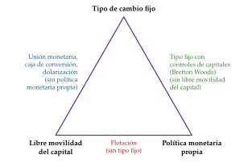
Fuente: Elaboración propia a partir de Obstfeld, Shambaugh y Taylor (2005). Cada vértice es un objetivo; cada lado, el régimen que consigue los 2 de sus extremos y renuncia al del vértice opuesto.
iii) Implicaciones:
Un ejemplo: si el banco central sube los tipos para frenar la inflación, entra capital y la moneda tiende a apreciarse. Le quedan 3 salidas:
mantener la libertad de capitales y dejar que la moneda se aprecie: renuncia al tipo fijo;
mantener el tipo fijo y limitar la entrada de capital: renuncia a la libertad de capitales;
deshacer la subida de tipos: renuncia a la política monetaria propia.
Fijar el tipo de cambio con libertad de capitales es comprometerse a seguir la política monetaria del país ancla y, con ella, su ciclo. Si la producción diverge de la del ancla, el ajuste lo hacen los precios y los salarios o, si son rígidos, la producción y el empleo.
Con tipo flexible, la producción y las variables nominales pueden separarse de las del ancla. Que eso sea bueno o malo depende de la credibilidad del banco central propio (I.2.2).
Volvamos a España: dentro del euro su tipo de cambio es fijo frente a los socios y el capital se mueve libremente, así que la política monetaria la decide el BCE para el conjunto. Es el trilema resuelto renunciando a la política monetaria propia [ver tema 3.B.16].
El trilema se demuestra con Mundell-Fleming (con tipo fijo y movilidad perfecta, la política monetaria es ineficaz) [ver tema 3.A.32] o con el enfoque monetario con precios flexibles: con paridad del poder adquisitivo y paridad de intereses, fijar \(E\) fija los precios relativos y el tipo de interés, \(i=i^*\), y la cantidad de dinero pasa a ser endógena [ver tema 3.B.14].
c) Extensiones
El trilema a medias: las esquinas no son las únicas opciones. Con algo de flexibilidad cambiaria o con controles parciales, un país gana algo de autonomía monetaria; las esquinas del trilema están «redondeadas» (Klein y Shambaugh, 2015).
El dilema: la extensión más discutida pone en duda el tercer lado, que la flotación garantice la autonomía (Rey, 2013a). La vemos a continuación.
d) Evidencia empírica
El trilema se ve en los datos: con más de un siglo de datos, los países con tipo fijo y libre movilidad del capital siguen los tipos de interés del país de referencia; los que tienen controles de capitales o flotan conservan más autonomía monetaria (Obstfeld, Shambaugh y Taylor, 2005).
Incluso con tipo fijo y capital libre queda algo de margen a corto plazo: los tipos de interés propios se separan un tiempo de los del ancla antes de seguirlos (Klein y Shambaugh, 2015).
e) Valoración
El trilema sigue siendo la referencia para pensar los regímenes: obliga a ver que la elección de un régimen es también la elección de una política monetaria.
Su punto débil está en el lado de la flotación: ¿basta con dejar flotar la moneda para tener una política monetaria propia?
¿Trilema o dilema? El ciclo financiero global
a) Idea
Rey (2013a) pone en duda que la flotación garantice la autonomía: un país abierto a los flujos de capital y con tipo de cambio flexible no disfruta necesariamente de una autonomía monetaria plena.
La razón es un ciclo financiero global, común a todo el mundo, que no sigue las condiciones macroeconómicas de cada país [ver tema 3.A.37] [ver tema 3.A.42].
b) Modelo
i) Supuestos:
Libertad de movimientos de capitales.
El dólar es la principal moneda de reserva y de financiación del mundo, y la política de la Reserva Federal decide cuánta liquidez en dólares hay.
Los grandes intermediarios financieros se apalancan más cuando el riesgo medido es bajo y menos cuando sube.
ii) Desarrollo:
Los precios de los activos con riesgo, los flujos brutos de capital y el crédito se mueven a la vez en todo el mundo, en sentido contrario al índice VIX, que mide la volatilidad esperada de la bolsa de Estados Unidos y sirve de termómetro de la aversión al riesgo (Rey, 2013a).
Con modelos de vectores autorregresivos (VAR), uno de los principales determinantes de ese ciclo es la política monetaria del país central, la de la Reserva Federal (Miranda-Agrippino y Rey, 2020).
El mecanismo: cuando la Reserva Federal baja los tipos, endeudarse en dólares se abarata, suben los precios de los activos en todo el mundo y, con ellos, el valor de las garantías con que se piden los préstamos. Las condiciones financieras se relajan en todas partes.5
El canal no es el tipo de interés de cada país, sino los precios de los activos, el apalancamiento de los bancos y la toma de riesgos. Pegatina: «cuando Estados Unidos estornuda, el mundo se resfría».
iii) Implicaciones:
Con libertad de capitales, el ciclo financiero global limita la política monetaria nacional sea cual sea el régimen cambiario.
La elección real sería entre la libertad de capitales y una política monetaria propia: más que un trilema, un dilema (gráfico 2). La política monetaria propia solo sería plena si se controlan, directa o indirectamente, los movimientos de capitales.
La política monetaria del país que flota sigue siendo eficaz, pero menos que si no hubiera libertad de capitales.
Es un argumento a favor de las medidas macroprudenciales y de la coordinación internacional de las políticas [ver tema 3.B.19].
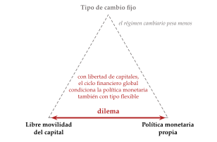
Fuente: Elaboración propia a partir de Rey (2013a). Con libertad de capitales, el ciclo financiero global condiciona la política monetaria propia también con tipo flexible: el vértice del tipo fijo deja de ser la clave.
c) Evidencia empírica
La evidencia matiza el dilema:
el ciclo financiero global se transmite más a los emergentes con tipo fijo que a los que flotan: el trilema se ha debilitado, pero sigue presente (Obstfeld, Ostry y Qureshi, 2019);
la globalización financiera ha aumentado la eficacia de la política monetaria de los que flotan, por los efectos de valoración de sus activos y pasivos en divisas (Georgiadis y Mehl, 2016);6
para la zona del euro, el BCE matiza que el motor principal es el apetito global por el riesgo y que no ha perdido el control de sus condiciones financieras (Habib y Venditti, 2018).
d) Valoración
El ciclo financiero global no hace indeseable la flotación; al contrario, la hace más valiosa. Si la Reserva Federal sube sus tipos y eso contrae la economía propia más de lo deseado, con tipo flexible el banco central puede bajar los suyos y dejar que la moneda se deprecie frente al dólar; con tipo fijo, no.
La flotación no aísla del todo, pero aísla más que el tipo fijo. Si no basta, la respuesta es complementarla con intervención, medidas macroprudenciales y medidas sobre los flujos (III), no volver a fijar.
La elección del régimen sigue siendo decisiva para la autonomía monetaria, también con un ciclo financiero global.
El argumento del dilema, contado por su autora: (Rey, 2013b).
Un repaso del trilema y del ciclo financiero para no especialistas: (The Economist, 2016).
I.2.2. Equilibrio interno
Pasamos de las políticas de demanda al equilibrio interno: cómo se ajustan la renta y el empleo ante las perturbaciones y qué pasa con la inflación.
Ajuste ante perturbaciones reales: es el argumento clásico de Friedman (1953) a favor de la flotación.
Una perturbación real adversa (una caída de la demanda exterior o de la inversión) exige cambiar los precios relativos. Con precios y salarios flexibles, el ajuste llega por los precios y el régimen importa poco.
Con precios rígidos, es más fácil mover un solo precio, el tipo de cambio, que miles: la depreciación abarata lo que se vende fuera y amortigua la caída de la producción.7 Pegatina: «más vale doblarse que quebrarse».
Un ejemplo: ante una caída de la inversión que frena el crecimiento, la moneda tiende a depreciarse.
Con tipo fijo, el banco central tiene que subir los tipos para defender la paridad, lo que enfría más la inversión: la política monetaria no solo no estabiliza el ciclo, sino que puede agravarlo. Así les pasó a Argentina a finales de los 90 y a Francia en el Sistema Monetario Europeo en 1992-1993, que defendió el franco con tipos altos y no devaluó.
Con tipo flexible, el banco central no sube los tipos y deja que la moneda se deprecie, lo que evita que la inversión caiga más y sube las exportaciones: la caída de la producción se suaviza.
La defensa no siempre resiste: el 16 de septiembre de 1992, tras intervenciones masivas, el Reino Unido suspendió la participación de la libra en el mecanismo de cambios del Sistema Monetario Europeo (Bank of England, 1992); la peseta se devaluó varias veces entre 1992 y 1993 (Eichengreen y Wyplosz, 1993) [ver tema 3.B.17] [ver tema 3.B.43].
Ajuste ante perturbaciones monetarias: es al revés. Si cambia la demanda de dinero, con tipo fijo la cantidad de dinero se ajusta sola por las reservas y la renta no se mueve; con tipo flexible, la perturbación llega a la renta (I.3.2).
Inflación y credibilidad: con discrecionalidad, un banco central que quiere bajar el paro por debajo del natural acaba con más inflación y el mismo paro, el sesgo inflacionista de Barro y Gordon (1983) [ver tema 3.A.36].
Con tipo fijo, la credibilidad se importa: fijar el tipo frente a la moneda de un banco central creíble baja el sesgo inflacionista sin subir el paro natural. Es «atarse las manos» (Giavazzi y Pagano, 1988) [ver tema 3.B.16]. Los planes de estabilización con ancla cambiaria de América Latina en los 90 (Argentina, Brasil, Chile) la usaron para bajar la inflación.
El riesgo: si la inflación propia converge despacio a la del ancla, el tipo real se aprecia, \[\tag{2} \gamma_q\simeq\gamma_E+\pi^*-\pi=\pi^*-\pi<0\quad\text{si }\pi>\pi^*,\] y se pierde competitividad; recuperarla exige devaluar, que es justo lo que destruye la credibilidad que se buscaba [ver tema 3.B.11].
Con tipo flexible, la credibilidad tiene que nacer dentro: un banco central independiente y un objetivo de inflación [ver tema 3.A.36]. Si falta, la inflación empuja a la depreciación, que encarece lo importado y alimenta más inflación; y con mucha inercia de precios aparece un efecto trinquete: la depreciación sube la inflación, pero la apreciación no la baja.
I.2.3. Equilibrio externo
Comercio e inversión: el tipo fijo elimina el riesgo de cambio y el coste de cubrirlo, y con ellos una incertidumbre que desanima las exportaciones, las importaciones y la inversión extranjera directa.
John Maynard Keynes defendía los tipos fijos por el comercio, pero criticó la vuelta del Reino Unido al patrón oro a la paridad de antes de la guerra: obligaba a los países deficitarios a subir tipos y bajar salarios, con más paro (Keynes, 1925) [ver tema 3.B.20].
Con una ecuación de gravedad, Rose (2000) encontró que los países con la misma moneda comerciaban entre sí unas 3 veces más que con los demás; los metaanálisis rebajan mucho la cifra (Rose y Stanley, 2005; Glick y Rose, 2016) [ver tema 3.B.10] [ver tema 3.B.16].8
Los mercados financieros ofrecen hoy más instrumentos para cubrir el riesgo de cambio, y eso reduce la ventaja del tipo fijo.
La ventaja del tipo flexible para el saldo exterior también se ha debilitado. Friedman y Mundell-Fleming suponen que la depreciación nominal se traslada casi uno a uno a la relación real de intercambio.
Gita Gopinath, entonces economista jefe del FMI, y sus coautores encuentran que una depreciación bilateral del 1 % solo mueve un 0,1 % la relación real de intercambio (Boz, Gopinath y Plagborg-Møller, 2017).
La razón es que el comercio se factura en una moneda dominante, casi siempre el dólar, y no en la del exportador: los precios de exportaciones e importaciones son mucho más rígidos de lo que se creía y la depreciación mueve poco las exportaciones netas, sobre todo por el lado de las importaciones (Gopinath et al., 2020) [ver tema 3.B.14].
La flexibilidad sigue ayudando en los sectores que fijan sus precios en moneda local, como el turismo, y a los exportadores de materias primas cuando cae su precio.
Riesgo de crisis: un tipo fijo con capital libre ofrece al mercado una apuesta en un solo sentido. Hay 3 generaciones de modelos que lo explican [ver tema 3.B.17]:
en la primera, una política incoherente con la paridad (un déficit financiado con crédito interno) agota las reservas hasta el ataque (P. Krugman, 1979);
en la segunda, el Gobierno abandona la paridad cuando defenderla le cuesta más que soltarla, y basta con que el mercado lo crea para que el ataque se produzca;
en la tercera, la devaluación hunde los balances de quienes deben en divisas y la crisis cambiaria se junta con la bancaria.
Evidencia sobre las crisis: en 50 emergentes entre 1980 y 2011, los regímenes intermedios son los más propensos a crisis bancarias y cambiarias; los anclajes duros no tanto, pero sí a los colapsos del crecimiento, quizá porque salir de ellos cuesta tanto que los Gobiernos esperan demasiado; y la variable que mejor anticipa la crisis es la sobrevaloración del tipo de cambio real (Ghosh, Ostry y Qureshi, 2015).
Reservas: el tipo fijo exige muchas reservas para ser creíble, y mantenerlas tiene un coste de oportunidad. Con flotación hacen falta menos, aunque los emergentes que flotan también acumulan por precaución (III.1). Cuántas bastan se mide con varios indicadores y con la métrica del FMI [ver tema 3.B.22].
I.2.4. Desarrollo de los mercados financieros
Hasta aquí hemos comparado los regímenes por su relación con las políticas fiscal, monetaria y estructurales. Las crisis asiáticas de finales de los 90 añadieron otra dimensión: la crisis bancaria y la cambiaria se alimentaron una a otra.
Eichengreen y Hausmann (1999) distinguen 3 explicaciones de por qué el régimen y la fragilidad financiera van juntos, y cada una pide un régimen distinto:
Riesgo moral: el tipo fijo es un seguro implícito. Bancos y empresas, que esperan un rescate si las cosas van mal, se endeudan en divisas y a corto plazo sin cubrirse, porque confían en la paridad. Pide más flexibilidad, para que todos aprendan a cubrirse, o la dolarización, que impide al banco central rescatar.
Pecado original: el país no puede endeudarse en su propia moneda a largo plazo, por su historial de inflación, por unos mercados poco desarrollados o por instituciones frágiles.9 Sus empresas acaban con descalces de moneda (ingresos en moneda nacional y deudas en dólares) o de plazo (proyectos largos financiados a corto) que no pueden cubrir: un país que solo puede deber en divisas no tiene con quién cubrirse [ver tema 3.B.11].
Con flotación, la depreciación hunde los balances de los deudores en dólares, y el miedo a que siga lleva a comprar divisas para cubrirse, lo que la agrava.
Con tipo fijo o poco flexible, defender la moneda exige subir los tipos, lo que lleva al impago a los deudores a corto plazo, frena la recuperación y, al hacer volátiles los tipos, impide que nazca un mercado de deuda local.
Todas las salidas son imperfectas; los autores ven en la dolarización la menos mala.
Problemas de compromiso: el que presta hoy cobra mañana, y lo que conviene a las 2 partes antes puede no convenir al deudor después; si las instituciones no garantizan el cobro, los contratos no se cumplen solos. La solución es institucional (mejores derechos de los acreedores) y el régimen importa menos: la flexibilidad deja al banco central sostener al sistema financiero en apuros, pero los acreedores, que lo anticipan, piden tipos más altos.
Con flotación y credibilidad, el mercado en moneda nacional se desarrolla: el sector público y el privado se endeudan más barato y se cubren en su propia moneda. Pero la flotación no evita todas las crisis: puede haber fugas de capitales o paradas súbitas aunque la moneda flote.
Hoy: muchos emergentes se endeudan más en su moneda que hace 20 años, una cierta «redención» del pecado original. Pero el riesgo se ha desplazado a los inversores extranjeros en deuda local y a las empresas que emiten en dólares, y sigue alimentando el miedo a flotar (I.3.1).
El trabajo original de las 3 hipótesis: (Eichengreen y Hausmann, 1999).
I.2.5. Economía política
La última dimensión es política: el régimen reparte ganancias y pérdidas entre sectores y entre países (Frieden, 2015).
El tipo fijo traslada las tensiones dentro: ante una perturbación, fuerza a bajar salarios y precios, y el ajuste es desigual.
Lo soportan sobre todo los bienes no comerciables, porque el precio de los comerciables se fija en buena parte fuera (hoy, en dólares); los salarios de esos sectores bajan más.
Con salarios nominales rígidos a la baja, el ajuste llega por las cantidades: más paro (Schmitt-Grohé y Uribe, 2016).
Fue la causa política de la caída del patrón oro de entreguerras: los ajustes de precios y salarios que exigía eran inviables con unos trabajadores y sindicatos cada vez más presentes en la vida política.
La flotación traslada las tensiones fuera: los países pueden caer en espirales de devaluaciones competitivas, un juego no cooperativo de suma negativa en el que cada uno intenta en vano ganar cuota a costa de sus socios (empobrecer al vecino) [ver tema 3.B.19].
No es casualidad que al abandono del patrón oro en los años 30 le siguiera la época de las conferencias internacionales: fijar los tipos de cambio puede ser la salida cooperativa.
Dentro del país, una depreciación reduce el poder adquisitivo de quienes consumen más bienes importados.
Por eso el tipo fijo puede ser también una señal política de integración o de cooperación con el país ancla, como lo fueron el Sistema Monetario Europeo y el euro.
Recapitulando, ninguno de los 2 regímenes gana en todas las dimensiones (tabla 2). En esta tesitura, ¿qué régimen debe elegir un país?
| Dimensión | Tipo fijo | Tipo flexible |
|---|---|---|
| Políticas de demanda | Fiscal eficaz; monetaria sin autonomía | Monetaria eficaz; fiscal poco eficaz |
| Perturbaciones reales | El ajuste recae en la renta y el empleo | Las absorbe el tipo de cambio |
| Perturbaciones monetarias | Las absorben las reservas | Llegan a la renta |
| Inflación | Credibilidad importada; riesgo de apreciación real | Depende del banco central propio |
| Volatilidad, comercio e inversión | Sin riesgo de cambio | Volatilidad y sobrerreacción |
| Riesgo de crisis | Ataques especulativos | Sin crisis cambiaria, pero no sin paradas súbitas |
| Reservas | Muchas, con su coste | Menos |
| Sistema financiero | Riesgo moral; descalces sin cubrir | Con deuda en dólares, efecto balance |
| Economía política | Tensiones internas (ajuste de salarios); señal de integración | Tensiones externas (devaluaciones competitivas) |
Fuente: Elaboración propia a partir de Friedman (1953), Mundell (1963), Giavazzi y Pagano (1988), Eichengreen y Hausmann (1999) y Ghosh, Ostry y Qureshi (2015). En verde, ventaja; en rojo, inconveniente.
I.3. ¿Qué régimen arroja un mejor resultado? Determinantes y evidencia
Hemos visto qué cambia con cada régimen; ahora, de qué depende cuál conviene y qué dicen los datos.
Conclusión anticipada: el régimen adecuado depende de dónde vienen las perturbaciones, de lo integrado que esté el país con su ancla, de la credibilidad de sus instituciones y de su desarrollo financiero. Los datos no dan un ganador universal. Pegatina, la del enganche: «cada uno sabe dónde le aprieta el zapato».
I.3.1. Los determinantes de la elección
La integración con el ancla: fijar el tipo de cambio cuesta menos cuanto menos falta hace el tipo de cambio para ajustarse. Son los criterios de la teoría de las áreas monetarias óptimas (Mundell, 1961; McKinnon, 1963; Kenen, 1969) [ver tema 3.B.16]:
el tamaño y la apertura: una economía pequeña y abierta gana más con la estabilidad del precio de lo que comercia y pierde menos, porque la depreciación se le va enseguida a los precios;
las perturbaciones simétricas con el ancla: si los ciclos van a la par, la política monetaria del ancla también le sirve;
otros mecanismos de ajuste: precios y salarios flexibles, movilidad del trabajo, transferencias fiscales;
la diversificación de la producción: las perturbaciones de cada sector se compensan.
El origen de las perturbaciones: reales o monetarias, como en el análisis de Poole (I.3.2).
La credibilidad: un país con historial de inflación y un banco central poco creíble gana con un ancla dura; uno con instituciones creíbles puede permitirse flotar con un objetivo de inflación (I.2.2).
El desarrollo financiero: sin mercados de divisas profundos ni deuda en moneda propia, la flotación es volátil y la depreciación daña los balances. Por eso muchos emergentes que dicen flotar no se atreven a hacerlo: el miedo a flotar (Calvo y Reinhart, 2002).
La economía política: el régimen lo eligen Gobiernos sometidos a grupos de interés, como los sectores comerciables o los deudores en divisas, y pesa el ciclo electoral: las devaluaciones tienden a retrasarse hasta después de las elecciones (Frieden, 2015).
La movilidad del capital: con controles, el trilema deja más margen para combinar un tipo estable con una política monetaria propia (III.2).
I.3.2. El origen de las perturbaciones: Poole en economía abierta
a) Idea
Poole (1970) mostró que un banco central debe fijar la cantidad de dinero o el tipo de interés según dónde nazcan las perturbaciones [ver tema 3.A.36].
En economía abierta, la elección es entre fijar el tipo de cambio o la cantidad de dinero, y la respuesta es parecida (Boyer, 1978): con movilidad perfecta, fijar el tipo de cambio es fijar el tipo de interés en \(i^*\).
b) Modelo
i) Supuestos
Mundell-Fleming con precios fijos y movilidad perfecta del capital, \(i=i^*\) [ver tema 3.A.32].
2 perturbaciones independientes, de media cero: una real, \(\varepsilon^{\mathrm{IS}}\), en la demanda de bienes, con varianza \(\sigma^2_{\mathrm{IS}}\), y una monetaria, \(\varepsilon^{\mathrm{LM}}\), en la demanda de dinero, con varianza \(\sigma^2_{\mathrm{LM}}\).
El objetivo es estabilizar la renta: elegir el régimen con menor \(\mathrm{Var}(Y)\).
ii) Desarrollo
Con tipo fijo, el dinero es endógeno y las reservas absorben la perturbación monetaria. La real llega entera a la renta con el multiplicador de la economía abierta, porque ni el tipo de interés ni el tipo real (\(\bar q=\overline E\,P^*/P\)) se mueven: \[Y=\frac{\bar A-b\,i^*+x\,Y^*+\nu\,\bar q+\varepsilon^{\mathrm{IS}}}{1-c\,(1-t)+m}\quad\Rightarrow\quad \mathrm{Var}(Y)_{\text{fijo}}=\frac{\sigma^2_{\mathrm{IS}}}{[1-c\,(1-t)+m]^2}.\]
Con tipo flexible, la cantidad de dinero es fija y la renta la decide la LM con \(i=i^*\). La perturbación real la absorbe el tipo de cambio, que se aprecia o se deprecia hasta compensarla, pero la monetaria llega a la renta: \[\frac{M}{P}=k\,Y-h\,i^*+\varepsilon^{\mathrm{LM}}\quad\Rightarrow\quad Y=\frac{M/P+h\,i^*-\varepsilon^{\mathrm{LM}}}{k},\qquad \mathrm{Var}(Y)_{\text{flexible}}=\frac{\sigma^2_{\mathrm{LM}}}{k^2}.\]
iii) Implicaciones
Conviene fijar el tipo de cambio si dominan las perturbaciones monetarias, y flotar si dominan las reales:
\[\text{fijar }E\ \text{es mejor}\iff\frac{\sigma^2_{\mathrm{LM}}}{k^2}>\frac{\sigma^2_{\mathrm{IS}}}{[1-c\,(1-t)+m]^2}\tag{3}\]
Es el argumento de Friedman (1953) visto desde el otro lado: las perturbaciones reales piden flexibilidad, y los países con una demanda de dinero inestable (inflación alta, innovación financiera, dolarización parcial) ganan con el tipo fijo.
Pegatina, la de Poole: «perturbación real, fija la cantidad; monetaria, fija el tipo»; aquí, el tipo de cambio.
c) Extensiones
Regímenes intermedios: si conviven las 2 perturbaciones, lo óptimo es una regla de intervención que acompaña solo en parte las presiones del mercado, un régimen intermedio (Boyer, 1978).
Con agentes que optimizan: en el modelo neokeynesiano de economía pequeña, lo óptimo es estabilizar la inflación interna y dejar flotar la moneda, y el tipo fijo es la peor de las reglas (Galí y Monacelli, 2005) [ver tema 3.A.32].
Pero el miedo a flotar tiene razones: si los precios de importación se fijan en la moneda del comprador o en dólares, el tipo de cambio no reasigna el gasto a corto plazo, y la política óptima debe atender también a sus desalineamientos (Engel, 2011).
d) Valoración
Explica bien por qué no hay un régimen óptimo para todos: depende de la estructura de las perturbaciones de cada país, que además cambia con el tiempo.
Pero es un modelo de precios fijos y de un solo objetivo: deja fuera la credibilidad, la inflación y el sistema financiero, que son los que más pesan en la evidencia.
I.3.3. Evidencia empírica
El problema de medir: lo que un país dice (de jure) y lo que hace (de facto) difieren, y a menudo el régimen de hecho es menos flexible que el declarado.10 Por eso hay clasificaciones alternativas a la del FMI:
Reinhart y Rogoff (2004) usan el tipo de cambio del mercado paralelo y la inflación, y añaden la categoría de caída libre (inflación de más del 40 % anual); la ponen al día Ilzetzki, Reinhart y Rogoff (2019), que muestran que muchos países que dicen flotar mantienen un ancla, sobre todo el dólar;
Levy-Yeyati y Sturzenegger (2005) agrupan los países por la volatilidad del tipo de cambio, de sus variaciones y de las reservas;
Shambaugh (2004) los clasifica por los movimientos frente a la moneda ancla.
Según la clasificación, un mismo país es fijo o flotante, y por eso los estudios se contradicen: unos encuentran mejores resultados con los tipos fijos duros, otros con la flotación y otros con una flexibilidad limitada.
Resultados:
inflación: los tipos fijos se asocian a menos inflación, por la credibilidad (Ghosh, Gulde y Wolf, 2002);
crecimiento: en los países en desarrollo, los regímenes más rígidos crecen menos y con más volatilidad; en los industriales no hay diferencia (Levy-Yeyati y Sturzenegger, 2003);
grado de desarrollo: en los países con poco acceso a los mercados, un ancla da credibilidad sin coste de crecimiento; a medida que se desarrollan y se integran, gana la flexibilidad, y en los avanzados la flotación se asocia a más crecimiento sin perder credibilidad (Rogoff et al., 2004);
crisis: los intermedios son los más propensos; los duros, a los colapsos del crecimiento (Ghosh, Ostry y Qureshi, 2015).
Balance: países parecidos eligen regímenes muy distintos sin grandes diferencias de crecimiento o de inflación, y sabemos poco de las causas y de las consecuencias de la elección (Rose, 2011). La conclusión de Frankel (1999) sigue en pie, y lo dice su título: ningún régimen es el adecuado para todos los países ni en todo momento.
Un repaso de la literatura sobre la elección del régimen: (Ouchen, 2013).
La clasificación de hecho de Ethan Ilzetzki, Carmen Reinhart y Kenneth Rogoff, con datos por país desde 1946: (Ilzetzki, Reinhart y Rogoff, 2026).
Recapitulando el apartado: con libertad de capitales, cada régimen deja viva una sola política de demanda (el trilema), y la flotación no aísla del todo del ciclo financiero global; el tipo fijo da credibilidad y estabilidad al comercio a cambio de ajustes internos dolorosos y riesgo de crisis; y la elección depende de las perturbaciones, la integración con el ancla, la credibilidad y el desarrollo financiero de cada país.
Pero lo hemos analizado con 2 regímenes estilizados. En la práctica hay un menú de regímenes según el grado de fijación, la frecuencia con que se revisa el ancla y el compromiso que se anuncia. Pasamos a estudiarlo.
II. Implementación del régimen cambiario
Una vez comparados los 2 regímenes estilizados, pasamos a los que los países tienen de verdad: el menú de regímenes que clasifica el FMI y hacia dónde se mueven los países.
Conclusión anticipada: entre los 2 polos hay un continuo de regímenes, y la mayoría de los países está en medio. La visión bipolar no se ha cumplido: los regímenes intermedios sobreviven, pero solo los que se defienden con reservas, intervención o credibilidad.
II.2. ¿Hacia qué régimen cambiario tienden los países?
Conocido el menú, la pregunta es qué eligen los países en la práctica. En la segunda mitad de los 90 había 2 predicciones enfrentadas.
La visión bipolar: con libertad de capitales, los regímenes intermedios desaparecerían y solo quedarían los extremos, la flotación o el anclaje duro (Eichengreen, 1994; Obstfeld y Rogoff, 1995). Tras las crisis de los 90, Fischer (2001) vio el «vaciado» de los intermedios. Pegatina para los intermedios: «ni chicha ni limonada».
El miedo a flotar: muchos países que dicen flotar no lo hacen; sus tipos de cambio se mueven poco y sus reservas y tipos de interés, mucho (Calvo y Reinhart, 2002).
¿Por qué seguir una banda en secreto, si su virtud es que, siendo creíble, estabiliza sola? Hay 2 razones enfrentadas.
A favor de anunciarla: si la moneda va a estar en una banda de todos modos, es mejor que sea pública y fija, para ganar credibilidad contra la inflación y la volatilidad.
A favor de callarla: una banda que no se anuncia no ofrece un blanco a los ataques especulativos ni obliga a un ajuste interno costoso para defenderla.
Lo que ha pasado: ni lo uno ni lo otro del todo (gráfico 5).
Los anclajes blandos siguen siendo el grupo más numeroso, con cerca de la mitad de los países, y el reparto entre los 4 grupos apenas ha cambiado en 10 años (Fondo Monetario Internacional, 2024b, 2026b).
Con su clasificación propia, Ilzetzki, Reinhart y Rogoff (2019) encuentran que los regímenes de flexibilidad limitada son mayoría y que el dólar es, con mucho, el ancla dominante.
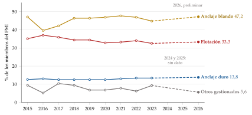
Fuente: Elaboración propia con datos del FMI (Fondo Monetario Internacional, 2024b, 2026b). Porcentaje de los miembros a 30 de abril de cada año; 2026, clasificación preliminar; 2024 y 2025, sin dato publicado.
Los hechos estilizados, según Rose (2011) y Klein y Shambaugh (2010):
solo un tercio de los países flota (65 de 195 economías en 2026), y casi todos los que flotan tienen un objetivo de inflación (Fondo Monetario Internacional, 2026b);
muchos más fijan, casi siempre al dólar (sobre todo los exportadores de petróleo y los centros financieros) y algunos al euro;
los que fijan son, salvo China, pequeños: pesan poco en el PIB mundial. Los países ricos y grandes flotan, pero no hay una relación clara entre la renta per cápita y el régimen;
los regímenes duran cada vez más.
Una perspectiva histórica:
en los 80 dominaba la idea de fijar: los planes de estabilización de América Latina tras la crisis de la deuda y, en Europa, el SME camino de la unión monetaria;
entre 1992 (la crisis del SME) y 2002 (el fin de la caja de conversión argentina), las crisis cambiarias graves llevaron a muchos países a no anunciar tipos fijos y a seguir bandas en la práctica: el miedo a flotar [ver tema 3.B.17];
desde entonces no ha habido crisis cambiarias de esa magnitud, ni siquiera con la Gran Recesión, en parte porque los emergentes flotan con intervención y han acumulado reservas (III.1).
Las unificaciones recientes: unificar un mercado cambiario dividido suele exigir una devaluación grande.
Egipto dejó flotar la libra en marzo de 2024 para cerrar la brecha con el mercado paralelo (Central Bank of Egypt, 2024).
Argentina levantó en abril de 2025 casi todo el cepo cambiario y pasó a flotar entre bandas (Banco Central de la República Argentina, 2025; Fondo Monetario Internacional, 2025b).
Recapitulando el apartado: el menú va de la unión monetaria a la flotación libre; la mitad de los países vive en medio, y los intermedios que sobreviven son los que tienen credibilidad o reservas para defenderse.
Para sostener cualquier régimen que no sea la flotación libre hay que intervenir en el mercado de divisas o regular los movimientos de capitales. Son las 2 herramientas que estudiamos a continuación.
III. Intervención y regulación de los mercados de cambio
Elegido el régimen, hay que sostenerlo. Pasamos a las 2 herramientas con que las autoridades actúan sobre el mercado de divisas: la intervención, que cambia la oferta y la demanda de divisas, y la regulación, que limita quién puede comprarlas y venderlas y para qué.
Conclusión anticipada: las 2 funcionan, pero con límites. La intervención suaviza los movimientos y funciona mejor si es creíble y pública, pero no sostiene un tipo de cambio contra los fundamentos. Los controles de capitales cuestan bienestar en un mundo sin fricciones, pero pueden mejorarlo si corrigen una externalidad; cambian la composición de los flujos más que su volumen.
III.1. Intervención
III.1.1. Definición, motivos y formas
Intervenir es comprar o vender divisas a cambio de moneda nacional (o anunciar que se hará) para influir en el tipo de cambio: las autoridades alteran el tipo que saldría de una flotación plenamente libre [ver tema 3.B.13].
Los motivos dependen del régimen [ver tema 3.B.11] [ver tema 3.B.13]:
con tipo fijo o bandas, la autoridad interviene para defender la paridad;
con tipo flexible, para suavizar los movimientos bruscos y corregir desórdenes del mercado («ir contra el viento»);
también por precaución: comprar divisas para acumular reservas, un seguro frente a las paradas súbitas de los flujos de capital que da confianza a los inversores;
o para frenar una apreciación y ganar competitividad. El FMI lo considera manipulación si busca una ventaja injusta (artículo IV del Convenio Constitutivo) [ver tema 3.B.19];
los exportadores de materias primas acumulan cuando los precios están altos para gastar cuando bajan, a veces a través de fondos soberanos.
Para qué sirven las reservas
Intervenir y dar confianza: influir en el tipo de cambio y convencer a los inversores de que el país podrá pagar en divisas, lo que abarata su financiación y hace menos probable una crisis.
Pagar al exterior aunque se corte la financiación: las importaciones, la deuda pública en divisas y la liquidez de emergencia en divisas a los bancos.
Gestionar la liquidez: como garantía en los swaps de divisas de la política monetaria y para que los mercados de divisas sean líquidos.
Invertir el exceso: lo que sobra de lo necesario se invierte para obtener rentabilidad, a veces en fondos soberanos que financian programas de desarrollo.
Cuántas reservas bastan se mide con varios indicadores y con la métrica del FMI [ver tema 3.B.22].
Las formas: la intervención clásica es la compraventa de divisas, que se ve en el balance simplificado del banco central, \(\mathrm{BM}=\mathrm{CI}+R\) (tabla 5).
En la intervención no esterilizada, comprar divisas sube \(R\) y la base monetaria en la misma cuantía: es una expansión monetaria pagada en divisas, y funciona por el canal de siempre, los tipos de interés. Con tipo fijo y capital libre, es la única que sostiene la paridad.
En la intervención esterilizada, el banco central vende a la vez títulos en moneda nacional (o emite los suyos) por el mismo importe: \(\Delta\mathrm{CI}=-\Delta R\) y la base no cambia. Solo cambia la composición de las carteras privadas, con más bonos nacionales y menos activos en divisas [ver tema 3.B.11].
| Intervención | Activo | Pasivo |
|---|---|---|
| No esterilizada | \(\Delta R=+100\) | \(\Delta\mathrm{BM}=+100\) |
| Esterilizada | \(\Delta R=+100\); \(\Delta\mathrm{CI}=-100\) (venta de títulos) | \(\Delta\mathrm{BM}=0\) |
Fuente: Elaboración propia. \(\mathrm{BM}\), base monetaria; \(\mathrm{CI}\), crédito interno; \(R\), reservas internacionales.
Otras formas:
la persuasión (jawboning): la autoridad anuncia que intervendrá en una dirección, y el anuncio basta para mover las expectativas. Pegatina: «más vale una palabra a tiempo que cien a destiempo»;
la intervención coordinada de varios bancos centrales, como los acuerdos del Plaza (1985), para depreciar el dólar, y del Louvre (1987), para frenar su caída (Dominguez y Frankel, 1993) [ver tema 3.B.19] [ver tema 3.B.21];
hoy también los derivados y las operaciones a plazo, y las líneas swap entre bancos centrales, que dan divisas sin gastar reservas [ver tema 3.B.43].
Un ejemplo reciente: Japón compró yenes por unos 9,8 billones de yenes a finales de abril y principios de mayo de 2024, y por otros 5,5 billones en julio, para frenar la caída de su moneda a mínimos de 34 años frente al dólar (Ministerio de Finanzas de Japón, 2024).
III.1.2. Canales y eficacia de la intervención esterilizada
La intervención no esterilizada funciona como cualquier política monetaria. La pregunta es si funciona la esterilizada, que no cambia la cantidad de dinero.
Con activos nacionales y extranjeros sustitutos perfectos, no: la prima de riesgo es nula en la paridad de intereses, \(\rho=0\) en (1), y la intervención no cambia ni los tipos de interés ni las expectativas.
Puede funcionar por 3 canales:
el canal de cartera: si los activos no son sustitutos perfectos, la prima \(\rho\) crece con la oferta de bonos nacionales en manos privadas. Al venderlos y comprar divisas, el banco central sube \(\rho\) y deprecia la moneda sin tocar el dinero (Branson, 1977) [ver tema 3.B.14]. Con intermediarios de balance limitado, la intervención funciona porque alguien tiene que absorber los flujos (Gabaix y Maggiori, 2015);
el canal de señales: la intervención anuncia la política monetaria futura o el tipo de cambio que el banco central cree de equilibrio, y el banco central «pone su dinero» detrás del anuncio; mueve las expectativas, \(\gamma E^e\), aunque los activos sean sustitutos perfectos (Mussa, 1981);
el canal de coordinación: cuando el tipo de cambio se aleja mucho de los fundamentos, la intervención ayuda a que los operadores que lo saben actúen a la vez (Sarno y Taylor, 2001); y como en el mercado el tipo se mueve con el flujo de órdenes, la del banco central lo mueve como cualquier otra (Evans y Lyons, 2002) [ver tema 3.B.14].
Evidencia empírica:
en los 80 se pensaba que la esterilizada era inútil; las intervenciones coordinadas del Plaza y del Louvre, que movieron el dólar, cambiaron la opinión: la intervención funciona, sobre todo si es pública y coordinada (Dominguez y Frankel, 1993);
con datos diarios de 33 países, la intervención tiene éxito según algunos criterios en más del 80 % de los casos, sobre todo para suavizar y con bandas estrechas, y más si se anuncia y se acompaña de comunicación (Fratzscher et al., 2019);
en los emergentes, la intervención frena la apreciación ante las entradas de capital (Blanchard, Adler y Carvalho Filho, 2015).
Valoración: la intervención mueve el tipo de cambio a corto plazo y funciona mejor para frenar movimientos bruscos que para cambiar tendencias. No puede sostener un tipo de cambio contra los fundamentos: vender reservas para defender una paridad sobrevalorada acaba en crisis [ver tema 3.B.17].
III.1.3. Costes, reservas y el Marco de Política Integrado
El coste cuasifiscal de esterilizar: el banco central paga por los títulos que vende más de lo que rinden las reservas que compra, y mantiene altos los tipos de interés que atraen más capital (Calvo, 1991).
El coste de oportunidad de las reservas: son recursos que podrían invertirse en proyectos más rentables; para los países en desarrollo, en torno al 1 % del PIB al año (Rodrik, 2006).
Las reservas se han disparado: las de divisas de los bancos centrales suman 13,2 billones de dólares (junio de 2026), frente a 1,8 billones en 1999; el 56,7 % de las asignadas está en dólares y el 20,6 % en euros (Fondo Monetario Internacional, 2026a), y China tiene unos 3,4 billones (State Administration of Foreign Exchange, 2026) (gráfico 6) [ver tema 3.B.11].
Fueron la consecuencia de intervenir para frenar la apreciación, como China para mantener el renminbi casi fijo al dólar, y de la lección de la crisis asiática: ante un mercado que se mueve en rebaño, cualquier volumen de reservas parecía poco.
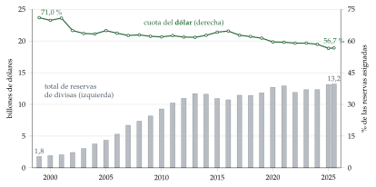
Fuente: Elaboración propia con datos del FMI (Fondo Monetario Internacional, 2026a). Total en billones de dólares y porcentaje de las reservas asignadas que está en dólares; datos a final de año y, en 2026, de junio.
La política monetaria como intervención implícita: las compras de activos de los bancos centrales de moneda fuerte deprecian su moneda sin tocar las reservas (Dedola et al., 2021) [ver tema 3.B.13].
No es intervención en sentido estricto, porque no se gestionan reservas, pero en espíritu cambia el valor de la moneda, y por eso tensa las relaciones entre países [ver tema 3.B.19].
En enero de 2018, Mario Draghi respondió al secretario del Tesoro estadounidense, Steven Mnuchin, que había defendido en Davos un dólar débil (Banco Central Europeo, 2018; Bloomberg, 2018).
El Marco de Política Integrado del FMI:
En Mundell-Fleming, la flotación y la política monetaria bastan para aislar a un país. Con fricciones (mercados de divisas poco profundos, descalces de moneda, comercio facturado en dólares, expectativas de inflación mal ancladas), no.
El Marco de Política Integrado estudia juntos 4 instrumentos: la política monetaria, la intervención cambiaria, las medidas macroprudenciales y las de gestión de los flujos de capital (Basu et al., 2020; Fondo Monetario Internacional, 2020).
Cada instrumento sirve para una fricción: un instrumento más no siempre conviene, porque puede no ser el adecuado para la imperfección que hay (Basu et al., 2020).
Según los principios que aprobó el FMI en 2023, la intervención solo está justificada ante fricciones identificadas (mercados poco profundos, descalces, expectativas que se desanclan) y como complemento de la flotación, no como sustituto del ajuste (Fondo Monetario Internacional, 2023).
Es la versión moderna del trilema con esquinas redondeadas: un país que flota puede usar otros instrumentos para que la flotación no le haga daño.
III.2. Regulación: los controles de capitales
La intervención actúa sobre el precio de las divisas; la regulación, sobre quién puede comprarlas y para qué.
Conclusión anticipada: los controles de capitales reducen el bienestar de un país pequeño sin fricciones, pero pueden mejorarlo si corrigen una externalidad; funcionan a corto plazo y cambian la composición de los flujos más que su volumen, y no sustituyen a unas políticas macroeconómicas adecuadas.
III.2.1. Definición y formas
Los controles de capitales son las restricciones que impone un Gobierno a las operaciones financieras con el exterior. Al cambiar los flujos de divisas, afectan al tipo de cambio.
El FMI distingue 2 tipos de medidas (Fondo Monetario Internacional, 2012):
las medidas de gestión de los flujos de capital, que limitan esos flujos y suelen discriminar según la residencia;
las medidas macroprudenciales, que limitan riesgos del sistema financiero (por ejemplo, el endeudamiento en divisas) sin mirar quién es residente [ver tema 3.B.27].
La regulación de la conducta en el mercado de divisas (el Código Global de Conducta, la liquidación en CLS) es otra cosa: busca un mercado íntegro, no un tipo de cambio [ver tema 3.B.13].
Las formas:
cuantitativas: prohibiciones, límites o autorizaciones previas, por ejemplo a la compra de inmuebles por no residentes, a la deuda exterior de los bancos o a la repatriación de beneficios; en las crisis, límites a la retirada de depósitos y a las transferencias al exterior;
de precio: impuestos sobre las operaciones o depósitos obligatorios sin remunerar, que encarecen sobre todo los flujos a corto plazo;
tipos de cambio múltiples: un tipo distinto según la operación.
Los impuestos:
el impuesto de Tobin: un pequeño impuesto sobre todas las operaciones de cambio, para «echar arena en los engranajes» de la especulación a corto plazo (Tobin, 1978). Exige que lo apliquen todos los países, o las operaciones se van a otra plaza;
el encaje chileno (1991-1998): un depósito sin remunerar en el banco central de una parte de cada entrada de capital (el 20 % al principio, el 30 % después) durante un año. Equivale a un impuesto tanto mayor cuanto más corto es el plazo de la entrada.
Los tipos de cambio múltiples: las autoridades fijan tipos distintos según la operación (las importaciones esenciales, las exportaciones, el capital), lo que exige un control de cambios que lleve cada operación a su mercado.
El FMI los considera una práctica que exige su aprobación (artículo VIII del Convenio Constitutivo), porque distorsionan los precios relativos y alimentan el mercado paralelo; el AREAER los recoge país por país (Fondo Monetario Internacional, 2024b).
Volvamos a España: tuvo tipos múltiples hasta el Plan de Estabilización de 1959, que los unificó en 60 pesetas por dólar [ver tema 4.A.27].
Chile llegó a tener en 1973 15 tipos de cambio según la operación, con distorsiones que hundieron el comercio (Hudson, 1994); Venezuela vivió con un control de cambios y varios tipos oficiales (CADIVI, SICAD, DICOM) desde 2003, mientras el paralelo se disparaba.
III.2.2. Justificación y marco institucional
Sin fricciones, la libertad de capitales es eficiente: lleva el ahorro adonde rinde más y permite suavizar el consumo (III.2.3).
Con fricciones, por la teoría del second best, añadir una restricción puede mejorar el bienestar [ver tema 3.A.22]. Las imperfecciones son condición necesaria, no suficiente:
una externalidad pecuniaria: quien se endeuda en divisas no tiene en cuenta que, si muchos lo hacen, una depreciación los obliga a vender a la vez y hunde los precios de las garantías de todos. Un impuesto a la entrada de deuda corrige el exceso, como un impuesto pigouviano (Korinek, 2011) [ver tema 3.B.13] [ver tema 3.B.27];
la sostenibilidad de la deuda: abrir la cuenta financiera abarata el crédito y puede disparar el consumo y la deuda exterior, sobre todo con instituciones frágiles; los controles frenan los flujos y dan tiempo;
el trilema: un país con tipo fijo o intermedio que quiere una política monetaria propia necesita frenar las entradas (o las salidas) de capital, como en Bretton Woods (I.2.1);
un país grande: si su demanda de fondos mueve el tipo de interés mundial, limitar sus préstamos lo baja y mejora su relación de intercambio intertemporal, como un arancel óptimo, si los demás no responden (anexo C).
El marco institucional:
el Convenio Constitutivo del FMI permite controlar los movimientos de capital (artículo VI), pero no restringir los pagos corrientes (artículo VIII) [ver tema 3.B.22];
la visión institucional del FMI, de 2012, acepta los controles en ciertas circunstancias: la liberalización debe ser gradual y ordenada; ante una oleada de entradas, primero las políticas macroeconómicas, y las medidas sobre los flujos solo como complemento, temporales y transparentes (Fondo Monetario Internacional, 2012);
su revisión de 2022 admite usarlas de forma preventiva sobre las entradas de deuda, aunque no haya oleada, si hay vulnerabilidades como un stock grande de deuda en divisas (Fondo Monetario Internacional, 2022);
en la UE, la libre circulación de capitales es una libertad del Tratado (artículo 63 del TFUE), con salvaguardias temporales frente a terceros países [ver tema 3.B.39].
la OCDE tiene desde 1961 su Código de Liberalización de los Movimientos de Capital, que compromete a sus miembros a liberalizar de forma progresiva.
III.2.3. Efectos: el modelo intertemporal con controles
a) Idea
Para ver qué hace un control de capitales hace falta un modelo con bienestar. El enfoque intertemporal de la cuenta corriente lo tiene: los flujos de capital son la otra cara de las decisiones de consumo e inversión en el tiempo [ver tema 3.B.12].
Lo usamos con un impuesto sobre el endeudamiento exterior (Schmitt-Grohé, Uribe y Woodford, 2022).
b) Modelo
i) Supuestos
El modelo de 2 periodos del enfoque intertemporal [ver tema 3.B.12], sin inversión para simplificar: un país pequeño recibe las dotaciones \(Y_t\) e \(Y_{t+1}\) y un agente representativo maximiza \(U=u(C_t)+\beta\,u(C_{t+1})\), con \(0<\beta<1\) el factor de descuento.
El país puede prestar y pedir prestado al tipo de interés real mundial \(r^*\), y quiere pedir prestado: \(r^*\) es menor que su tipo de autarquía.
El Gobierno grava cada unidad de deuda exterior con un impuesto \(\tau\), no prohibitivo, y devuelve lo recaudado a los hogares en bloque.
ii) Desarrollo
En autarquía, el país consume su dotación: el punto \(A\) del gráfico 7.
Con libertad de capitales, el país consume en \(C\), donde la curva de indiferencia \(U_1\) es tangente a la recta nacional, que pasa por \(A\) con pendiente \(-(1+r^*)\); en \(t\) tiene un déficit por cuenta corriente, \(C_t-Y_t>0\).
Con el impuesto, los hogares se endeudan al tipo interno \(r=r^*+\tau\), y la ecuación de Euler pasa a ser \[\tag{5} u'(C_t)=\beta\,(1+r^*+\tau)\,u'(C_{t+1}).\]
Como el impuesto vuelve a los hogares, el país sigue pagando \(r^*\) al exterior: el equilibrio está sobre la recta nacional, en el punto \(D\), entre \(A\) y \(C\).
En \(D\), la curva de indiferencia \(U_2\) tiene la pendiente del tipo interno, \(-(1+r^*+\tau)\), más inclinada que la recta nacional (anexo C).
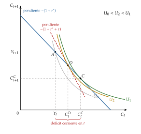
Fuente: Elaboración propia a partir de Schmitt-Grohé, Uribe y Woodford (2022) y Obstfeld y Rogoff (1996, cap. 1). \(A\) es la dotación (y la autarquía); \(C\), el consumo con libertad de capitales; \(D\), con el impuesto \(\tau\).
iii) Implicaciones
Sobre el consumo: el impuesto encarece consumir hoy; el consumo presente baja y el futuro sube.
Sobre la inversión: si la hubiera, también bajaría, porque se invierte hasta que el capital rinde \(r^*+\tau\) en vez de \(r^*\) [ver tema 3.B.12].
Sobre la cuenta corriente: con menos consumo y menos inversión, el déficit corriente de \(t\) se reduce. El control puede corregir un desequilibrio exterior.
Sobre el bienestar: \(U_0<U_2<U_1\). El país pide prestado menos de lo óptimo y está peor que con libertad de capitales, aunque mejor que en autarquía: en un país pequeño sin fricciones, el control es una distorsión, como un arancel.
c) Extensiones
Con una externalidad: si endeudarse en divisas tiene una externalidad pecuniaria, el nivel privado de deuda es excesivo y un impuesto bien elegido mejora el bienestar (Korinek, 2011). Es lo que da la vuelta al resultado y justifica la visión institucional del FMI.
Un país grande: además de la distorsión, el control baja el tipo de interés mundial y el coste de su deuda, y puede salir ganando, salvo que otro país grande responda y ambos acaben peor, como en una guerra arancelaria (anexo C).
El modelo, con el manual y sus diapositivas: (Schmitt-Grohé, Uribe y Woodford, 2022; Uribe, 2022).
d) Valoración
El modelo explica por qué la libertad de capitales es la regla y los controles la excepción: sin fricciones, solo distorsionan.
Pero es un modelo sin fricciones financieras, y las razones para controlar los capitales están precisamente en ellas. Lo que queda es saber si los controles funcionan en la práctica.
III.2.4. Experiencias y evidencia
Las experiencias:
Chile (1991-1998): el encaje sobre las entradas de capital, el ejemplo de control a la entrada más estudiado;
Malasia (1998): controles a la salida y un tipo fijo de 3,80 ringgit por dólar en plena crisis asiática, a contracorriente de la opinión del FMI de entonces (Singh, 2023);
Brasil (2009-2013): un impuesto a la entrada de inversión de cartera ante la fuerte apreciación del real (Forbes, Fratzscher y Straub, 2015);
Islandia (2008-2017), Chipre (2013-2015) y Grecia (2015-2019): controles a la salida para frenar la huida de depósitos en una crisis bancaria; en Chipre y Grecia, dentro del euro (Fondo Monetario Internacional, 2022) [ver tema 3.B.16];
Volvamos a España: en septiembre de 1992, en plena crisis del SME, España, Irlanda y Portugal recurrieron a controles temporales para defender sus monedas (Eichengreen y Wyplosz, 1993).
La evidencia:
los controles a la entrada dan algo más de autonomía monetaria, alargan los plazos de los flujos y reducen algo las presiones sobre el tipo real, pero no reducen el volumen neto de los flujos; los de salida de Malasia sí frenaron las salidas. La literatura se apoyaba demasiado en Chile y Malasia (Magud, Reinhart y Rogoff, 2018);
las medidas macroprudenciales reducen la fragilidad financiera, pero ni ellas ni las medidas sobre los flujos cambian mucho el tipo de cambio ni los flujos agregados (Forbes, Fratzscher y Straub, 2015).
El balance de los controles:
a favor: reducen la volatilidad del tipo de cambio al penalizar la especulación a corto plazo, y dan tiempo para corregir los desequilibrios internos;
en contra: desincentivan la inversión, frenan también el arbitraje (y con él la integración de los mercados y la ley del precio único), distorsionan las decisiones intertemporales y se esquivan con el tiempo.
Recapitulando el apartado: la intervención y los controles son los instrumentos con que se sostiene un régimen y se redondean las esquinas del trilema; funcionan como complemento de unas políticas coherentes con el régimen, nunca como sustituto.
Conclusión
Recapitulación:
El trilema obliga a elegir: con libertad de capitales, fijar el tipo de cambio es renunciar a la política monetaria propia, y flotar no aísla del todo del ciclo financiero global.
El tipo fijo da credibilidad y estabilidad al comercio, pero deja el ajuste a precios y salarios y expone a ataques; el flexible absorbe las perturbaciones reales, pero trae volatilidad y, con deuda en dólares, miedo a flotar.
Entre los 2 polos hay un menú de regímenes, y la mitad de los países está en medio; sobreviven los intermedios que se defienden con credibilidad y reservas.
Para sostener el régimen, los países intervienen y a veces limitan los capitales: los 2 instrumentos funcionan como complemento, no como sustituto, de las políticas adecuadas.
Relevancia:
Para España, la elección se hizo con el euro: renunció al tipo de cambio dentro de la zona y comparte una moneda que flota frente al resto del mundo [ver tema 3.B.16] [ver tema 4.A.28].
Extensiones:
La determinación del tipo de cambio [ver tema 3.B.14], las crisis cambiarias que acaban con los tipos fijos [ver tema 3.B.17], la coordinación internacional y las guerras de divisas [ver tema 3.B.19], la historia del sistema monetario internacional [ver tema 3.B.20] [ver tema 3.B.21] y el FMI [ver tema 3.B.22].
Opinión:
La paradoja de los últimos 20 años es que, mientras los tipos fijos perdían peso en la economía mundial, el consenso aceptaba la intervención y los controles como complemento de la flotación (Fondo Monetario Internacional, 2020, 2022). No es una vuelta atrás: es reconocer que el trilema tiene las esquinas redondeadas.
Idea final:
Frankel (1999) lo resumió en el título de su ensayo: ningún régimen sirve a todos los países ni en todo momento. Cada uno sabe dónde le aprieta el zapato.
Lo que ningún país puede hacer es elegir un régimen y aplicar políticas que no casen con él: eso es el trilema, y todo lo demás es comentario.
A. Anexo: los regímenes del FMI, uno a uno
Este anexo recorre los 10 regímenes de la clasificación de hecho del FMI con su definición, sus ventajas e inconvenientes y un ejemplo vigente, con su serie cuando la hay (Habermeier et al., 2009; Fondo Monetario Internacional, 2026b).
Número de economías en cada régimen a 30 de abril de 2026 (clasificación preliminar, sobre 195): sin moneda propia, 15; caja de conversión, 12; convencional, 40; bandas horizontales, 1; estabilizado, 25; deslizamiento, 1; similar al deslizamiento, 25; flotación, 34; flotación libre, 31, y otros gestionados, 11 (Fondo Monetario Internacional, 2026b).
Los miembros de una unión monetaria se clasifican por el régimen de la moneda común: la zona del euro, en libre flotación; la UEMOA y la CEMAC, en el anclaje convencional, y el Caribe Oriental, en caja de conversión. La dolarización oficial, unilateral o con acuerdo, es la categoría «sin moneda propia de curso legal»; la no oficial no es un régimen.
A.1. Anclajes duros
Sin moneda propia de curso legal: Ecuador, El Salvador y Panamá con el dólar; Kosovo, Montenegro, San Marino y Andorra con el euro. Ventajas e inconvenientes en II.1.1.
Caja de conversión: el dólar de Hong Kong se mueve dentro de la banda de 7,75 a 7,85 por dólar desde 2005, y ha pasado años cerca de cada uno de los bordes (gráfico 8). Bulgaria, en el euro desde el 1 de enero de 2026, todavía figura como caja de conversión en la clasificación preliminar de abril de 2026 (Fondo Monetario Internacional, 2026b).
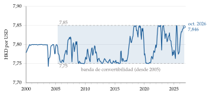
Fuente: Elaboración propia con datos de la Reserva Federal (Board of Governors of the Federal Reserve System, 2026). Media mensual; la banda de 7,75 a 7,85, desde mayo de 2005 (Hong Kong Monetary Authority, 2005).
A.2. Anclajes blandos
Convencional: el país ancla su moneda, de jure o de facto, a otra o a una cesta (por ejemplo, la de sus principales socios, para fijar el tipo efectivo) y la deja fluctuar menos del \(\pm1\) %; notifica el ancla al FMI y defiende la paridad con intervención directa.
Ventajas: credibilidad y estabilidad para el comercio con el ancla, sin renunciar a la moneda.
Inconvenientes: sin política monetaria propia si el capital es libre, y expuesto a ataques si la paridad deja de ser creíble.
Ejemplo: el riyal saudí, a 3,75 por dólar desde 1986 (gráfico 9).
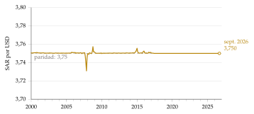
Fuente: Elaboración propia con datos del Banco de Pagos Internacionales (Bank for International Settlements, 2026a). Media mensual.
Estabilizado: el tipo se mantiene en un margen del 2 % durante al menos 6 meses por acción oficial (incluidas las rigideces del mercado), sin compromiso político de las autoridades.
Ventajas: la estabilidad de un tipo fijo sin atarse públicamente a él.
Inconvenientes: sin el compromiso, no importa toda la credibilidad del ancla, y la estabilidad puede romperse cuando deja de interesar.
Ejemplos: el denar de Macedonia del Norte, en torno a 61,5 por euro desde 2002 con un régimen oficial de flotación (gráfico 10); Bolivia, con un deslizamiento oficial que en la práctica es un ancla al dólar, y Nicaragua desde 2024. La kuna croata, que estaba en este grupo, desapareció con la entrada de Croacia en el euro el 1 de enero de 2023 (Fondo Monetario Internacional, 2024b).
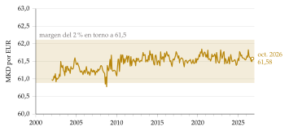
Fuente: Elaboración propia con datos del Banco de Pagos Internacionales (Bank for International Settlements, 2026a). Media mensual, cociente de los tipos del denar y del euro frente al dólar.
Deslizamiento: la paridad se ajusta en pequeñas cantidades, a un ritmo anunciado de antemano o según indicadores como la inflación pasada; puede ser de depreciación o de apreciación, y sus variantes difieren en la publicidad de la senda, su velocidad y la frecuencia con que se revisa.
Ventajas: más flexibilidad que un tipo fijo, porque admite un diferencial de inflación con el ancla sin que el tipo real se aprecie, y algo más de autonomía monetaria.
Inconvenientes: el margen de política monetaria es muy reducido, y la apreciación real no desaparece si la inflación supera al deslizamiento.
Ejemplo: el córdoba de Nicaragua, que se depreció a un ritmo anunciado desde 1993 hasta que el deslizamiento se puso a cero el 1 de enero de 2024 (gráfico 11) (Banco Central de Nicaragua, 2023). Hoy el único deslizamiento es el de Botsuana, con una cesta de rand y derechos especiales de giro (Fondo Monetario Internacional, 2026b).
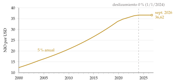
Fuente: Elaboración propia con datos del Banco de Pagos Internacionales (Bank for International Settlements, 2026a) y del Banco Central de Nicaragua (Banco Central de Nicaragua, 2023). Media mensual; desde enero de 2024, 36,6243.
Similar al deslizamiento: el tipo se mantiene en un margen del 2 % en torno a una tendencia identificada estadísticamente durante al menos 6 meses, sin que pueda considerarse flotación.
Ventajas e inconvenientes: los del deslizamiento, sin el compromiso de anunciar la senda.
Ejemplo: el renminbi chino, que figura en este grupo según la clasificación preliminar de 2026, tras pasar por «otros gestionados» desde marzo de 2022 (gráfico 12) (Fondo Monetario Internacional, 2024b, 2026b).
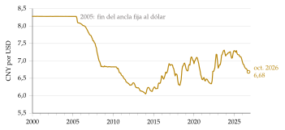
Fuente: Elaboración propia con datos de la Reserva Federal (Board of Governors of the Federal Reserve System, 2026). Media mensual.
Bandas horizontales: el tipo se mueve en una banda de al menos el \(\pm1\) % en torno a una paridad central, o entre un máximo y un mínimo que difieren más del 2 %. Es el régimen de Marruecos y el de las zonas objetivo (II.1.3).
Ventajas: si es creíble, ancla las expectativas y reduce la volatilidad, y deja algo de autonomía monetaria.
Inconvenientes: los realineamientos aumentan la volatilidad, y una banda que no se cree invita al ataque.
A.3. Flotación y otros regímenes
Flotación: el dólar neozelandés y el real brasileño flotan con intervenciones ocasionales (gráfico 13); Egipto, desde marzo de 2024, cuando dejó flotar la libra tras unificar sus tipos (gráfico 14) (Central Bank of Egypt, 2024).
Flotación libre: Estados Unidos, la zona del euro, Japón, el Reino Unido, Canadá, Australia o México (Fondo Monetario Internacional, 2026b).
Otros gestionados: la categoría residual, para los regímenes que no encajan en ninguna otra o que cambian con frecuencia: Argentina, Irán, Kuwait, Etiopía o Venezuela (Fondo Monetario Internacional, 2026b).
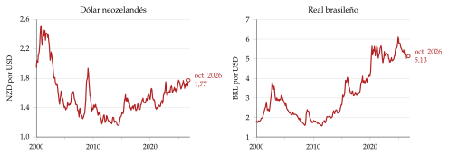
Fuente: Elaboración propia con datos de la Reserva Federal (Board of Governors of the Federal Reserve System, 2026). Medias mensuales.
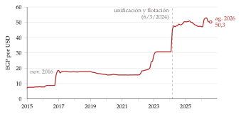
Fuente: Elaboración propia con datos del Banco de Pagos Internacionales (Bank for International Settlements, 2026a). Media mensual; la línea vertical marca la unificación del 6 de marzo de 2024 (Central Bank of Egypt, 2024).
El vídeo del FMI que explica la clasificación con estos ejemplos: (IMF Institute for Capacity Development, 2021).
Cómo clasificaba el FMI los regímenes en 2004, con el paso a la clasificación de hecho: (Fondo Monetario Internacional, 2004).
B. Anexo: las zonas objetivo de Krugman, paso a paso
El punto de partida es (4), con los fundamentos \(f_t\equiv m_t+v_t\). Dentro de la banda, \(m_t\) no cambia y \(\mathrm{d}v_t=\sigma\,\mathrm{d}z_t\), un paseo aleatorio en tiempo continuo sin deriva (\(z_t\) es un movimiento browniano).
Una solución que depende solo de los fundamentos: buscamos \(e_t=g(f_t)\). Por el lema de Itô, \(\mathbb{E}_t[\mathrm{d}e_t]/\mathrm{d}t=\tfrac{\sigma^2}{2}\,g''(f_t)\), y (4) queda \[g(f)=f+\frac{\alpha\sigma^2}{2}\,g''(f).\]
La solución general es la recta de 45° más 2 exponenciales: \[g(f)=f+A\,\mathrm{e}^{\lambda f}+B\,\mathrm{e}^{-\lambda f},\qquad \lambda=\sqrt{\frac{2}{\alpha\sigma^2}}.\]
Una banda simétrica en torno a la paridad central (que normalizamos en \(f=0\)) exige \(B=-A\): \[g(f)=f+A\left(\mathrm{e}^{\lambda f}-\mathrm{e}^{-\lambda f}\right).\]
El smooth pasting: en los bordes de los fundamentos, \(\pm\bar f\), donde la autoridad interviene, la curva tiene que ser tangente a la banda, \(g'(\bar f)=0\), porque si no los agentes tendrían una ganancia segura al acercarse al borde: \[1+A\lambda\left(\mathrm{e}^{\lambda\bar f}+\mathrm{e}^{-\lambda\bar f}\right)=0\quad\Rightarrow\quad A=-\frac{1}{\lambda\left(\mathrm{e}^{\lambda\bar f}+\mathrm{e}^{-\lambda\bar f}\right)}<0.\]
Por qué es una S aplanada: con \(A<0\), para \(f>0\) el término exponencial es negativo y \(g(f)<f\); para \(f<0\), al revés. El tipo queda dentro de la recta de 45°, y los bordes de la banda son \(e^{\max}=g(\bar f)\) y \(e^{\min}=-g(\bar f)\) (P. R. Krugman, 1991). ∎
Sin credibilidad: si en el borde hay una probabilidad de realineamiento en vez de defensa, el signo de \(A\) puede cambiar y la curva se vuelve una S invertida, más inclinada que la de 45° (Bertola y Caballero, 1992).
C. Anexo: el control de capitales, paso a paso
Los hogares: piden prestado \(B_t=C_t-Y_t>0\) en \(t\) y devuelven \((1+r^*+\tau)B_t\) en \(t+1\); reciben la transferencia \(T_{t+1}\), que toman como dada. Su problema es \[\begin{array}{rl}\displaystyle \max_{C_t,\,C_{t+1}} & \displaystyle u(C_t)+\beta\,u(C_{t+1}) \\ \text{s.a.} & C_{t+1}=Y_{t+1}-(1+r^*+\tau)\,(C_t-Y_t)+T_{t+1}\end{array}\]
La condición: sustituyendo la restricción en el objetivo y derivando respecto a \(C_t\), \(u'(C_t)-\beta\,(1+r^*+\tau)\,u'(C_{t+1})=0\), que es (5).
El equilibrio: el Gobierno devuelve lo que recauda, \(T_{t+1}=\tau B_t\). Sustituyendo en la restricción, \(C_{t+1}=Y_{t+1}-(1+r^*)\,(C_t-Y_t)\): el país en su conjunto paga \(r^*\) al exterior, y su restricción es la nacional, \[C_t+\frac{C_{t+1}}{1+r^*}=Y_t+\frac{Y_{t+1}}{1+r^*}.\]
El punto \(D\): está sobre la recta nacional, donde la relación marginal de sustitución es \(1+r^*+\tau\) en vez de \(1+r^*\). Como la curva de indiferencia es convexa, \(D\) queda entre \(A\) y \(C\): menos endeudamiento y menos déficit corriente que en \(C\). ∎
El bienestar: \(C\) es el mejor punto de la recta nacional, así que \(U_2<U_1\). Y como la utilidad crece a lo largo de la recta de \(A\) a \(C\) (las preferencias son convexas), \(D\), que está entre los 2, da más utilidad que \(A\): \(U_2>U_0\).
Un país grande: si su endeudamiento sube el tipo mundial, \(r^*=r^*(B_t)\) con \(r^{*\prime}>0\), cada unidad adicional de deuda encarece toda la anterior. Los hogares no lo tienen en cuenta, y un impuesto \(\tau=B_t\,r^{*\prime}(B_t)\) les hace internalizar ese coste, como un arancel óptimo.
El país puede estar mejor con el control que con libertad de capitales, según los parámetros, aunque haya represalias.
Pero si un país grande impone su control óptimo, el otro tiene interés en responder, y los 2 pueden acabar peor que sin controles, como en una guerra arancelaria.
D. Anexo: para el test
Fechas y obras: Friedman (1953), a favor de los tipos flexibles; Mundell (1961), áreas monetarias óptimas; Fleming (1962) y Mundell (1963), el modelo que da el trilema; P. R. Krugman (1991), zonas objetivo; Calvo y Reinhart (2002), miedo a flotar; Rey (2013a), el dilema; Acuerdo Smithsonian (diciembre de 1971), bandas del \(\pm2{,}25\) %; flotación generalizada desde marzo de 1973; Segunda Enmienda del Convenio del FMI, en vigor desde 1978; visión institucional del FMI (2012, revisada en 2022); Marco de Política Integrado (2020).
Trampas:
la BP vertical es movilidad nula del capital (\(\beta_K=0\)), no perfecta;
la zona del euro está en libre flotación en la clasificación del FMI, y la unión monetaria no es una categoría aparte;
Montenegro y Kosovo no tienen moneda propia: usan el euro como única moneda de curso legal (dolarización oficial y unilateral);
en la flotación libre se interviene como mucho 3 veces en 6 meses, de no más de 3 días hábiles cada una;
esterilizar una compra de divisas es vender títulos;
la intervención esterilizada funciona por el canal de cartera si los activos no son sustitutos perfectos, y por el de señales aunque lo sean.
Preguntas de test de exámenes anteriores, con su explicación: https://www.
Bibliografía
Usamos el tipo de cambio directo, \(E\): unidades de moneda nacional por unidad de moneda extranjera, es decir, el precio de la divisa. Si \(E\) sube, la moneda nacional se deprecia; si baja, se aprecia. Con tipo fijo se habla de devaluación y revaluación cuando la autoridad cambia la paridad. El tipo de cambio real es \(q\equiv E\,P^*/P\), y su subida es una depreciación real (una ganancia de competitividad-precio) [ver tema 3.B.13]. Conviene decirlo al empezar: en los mercados gana peso la cotización indirecta (unidades de moneda extranjera por unidad de moneda nacional), y no todos los miembros del tribunal usan la misma.↩︎
Lleva subíndice porque \(\beta\) es el factor de descuento del modelo intertemporal con controles de capitales (III.2).↩︎
También se le llama trinidad imposible, trinidad irreconciliable, triángulo de la imposibilidad o trilema monetario.↩︎
Es una aplicación de la regla de Tinbergen (1952): para alcanzar un número dado de objetivos hacen falta tantos instrumentos independientes como objetivos. Las autoridades querrían una política monetaria al servicio de los objetivos internos (la inflación, el paro), un tipo de cambio nominal estable y la plena movilidad del capital, que asigna bien el ahorro en el tiempo y reparte el riesgo; pero con libertad de capitales el tipo de interés es un solo instrumento y solo puede servir a un objetivo, el tipo de cambio o la economía propia. Jan Tinbergen recibió en 1969 el primer Nobel de Economía, junto con Ragnar Frisch.↩︎
Según The Economist (2016), en uno de sus trabajos Rey encuentra que una subida inesperada del tipo de interés de la Reserva Federal eleva pronto los diferenciales de los préstamos hipotecarios no solo en Estados Unidos, sino también en Canadá, el Reino Unido y Nueva Zelanda, países que dejan flotar su moneda.↩︎
La eficacia de la política monetaria propia depende de 2 rasgos de los balances exteriores: su tamaño, que mide cuánto llega el ciclo financiero global a las condiciones financieras internas y la debilita, y su exposición neta a las divisas, que con tipo flexible crea efectos de valoración que la refuerzan. Dicho de otro modo, el ciclo financiero global puede atascar el canal del tipo de interés, pero refuerza el del tipo de cambio (Georgiadis y Mehl, 2016).↩︎
Friedman (1953) lo comparaba con el horario de verano: es más fácil adelantar la hora que conseguir que todos adelanten a la vez sus costumbres.↩︎
Se esperaba además que la unión monetaria transformara las estructuras productivas: sin la devaluación como salida, los Gobiernos tendrían más presión para hacer las reformas que antes habían rechazado [ver tema 3.B.16].↩︎
Endeudarse en dólares (o en euros en el este de Europa) es más barato que hacerlo en moneda local y, a veces, la única forma de conseguir financiación. Pero ata la política fiscal a la cambiaria: una devaluación puede llevar al impago de la deuda en divisas y a una crisis soberana, bancaria o las 2, según quién deba. Y basta con que suba el riesgo percibido de devaluación (o de redenominación, como en la crisis de la deuda soberana europea) para que el capital huya, el crédito se seque y el déficit público crezca.↩︎
Por eso el FMI adoptó en 1999 una clasificación basada en lo que los países hacen: su informe anual recoge a la vez el régimen declarado y la evaluación de su personal (Fondo Monetario Internacional, 2004).↩︎
No hay que confundirla con la dolarización no oficial (o de facto): el uso de una divisa en los depósitos, los préstamos o los precios sin que sea de curso legal. El Salvador dio curso legal al bitcóin junto al dólar en septiembre de 2021; con la reforma de enero de 2025, pactada con el FMI, aceptarlo pasó a ser voluntario (Fondo Monetario Internacional, 2024a, 2025a). Para el episodio, (Funcas, 2022).↩︎